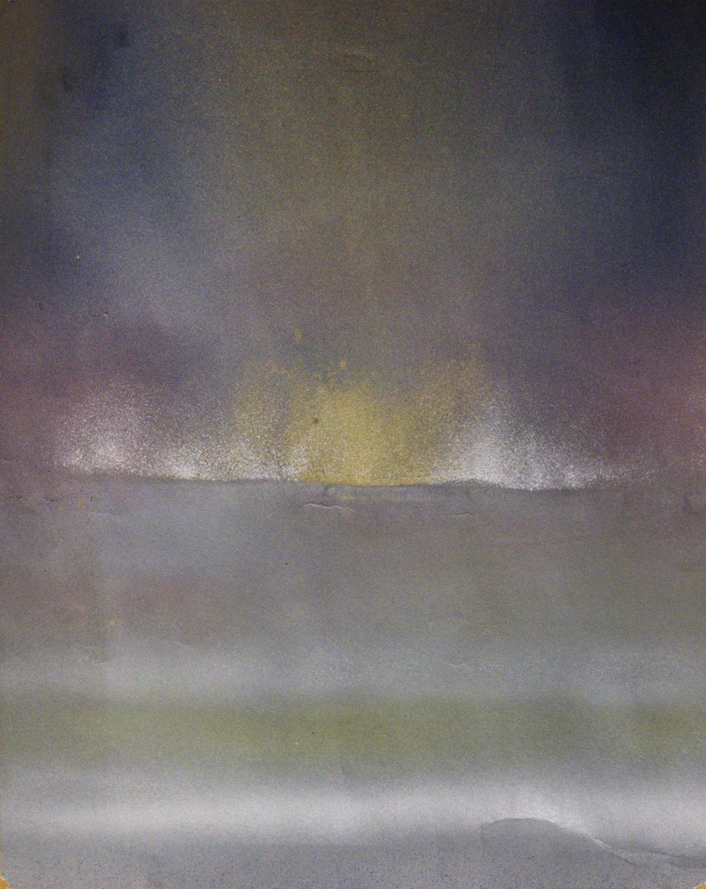

Aerografías
La producción de Rodolfo Aguerreberry busca alcanzar nuevas formas de expresividad que permiten poner en imágenes una multiplicidad de sensaciones. En esta dirección, la aerografía es una técnica utilizada por el artista para presentar una serie de perfiles humanos donde se deja entrever su semejanza con un paisaje natural. Esta búsqueda visual nos permite perensar de manera crítica la siempre problemática distancia existente entre lo humano y lo animal

